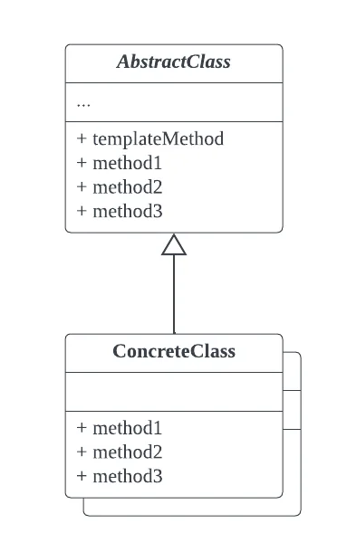
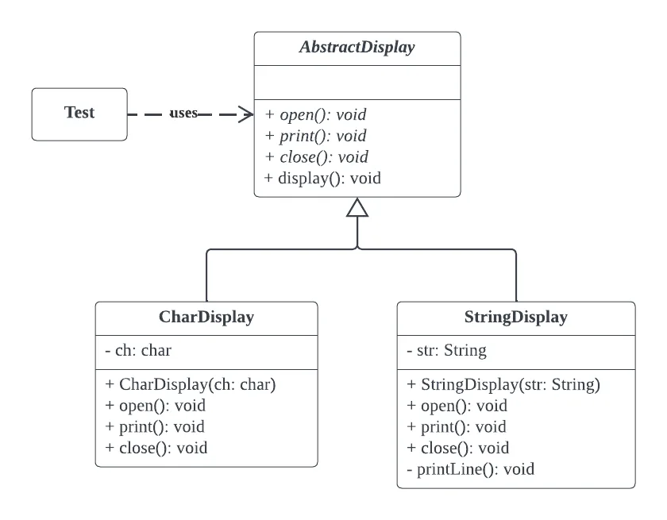

模板方法模式：父类定框架，子类填步骤

- 1设计模式：23 种套路与六原则
- 2工厂方法模式：由子类决定创建什么
- 3抽象工厂模式：成系列地创建对象
- 4生成器模式：分步骤造出复杂对象
- 5原型模式：复制而不是新建
- 6单例模式：全局只此一份
- 7适配器模式：让不兼容的接口对接
- 8桥接模式：把抽象与实现拆开
- 9组合模式：把对象搭成一棵树
- 10装饰模式：给对象层层加功能
- 11外观模式：给复杂系统一个入口
- 12享元模式：用共享状态省内存
- 13代理模式：给对象配个替身
- 14责任链模式：让请求沿链传递
- 15命令模式：把请求封装成对象
- 16迭代器模式：不暴露内部地遍历
- 17中介者模式：让对象不再彼此纠缠
- 18备忘录模式：随时存档与回滚
- 19观察者模式：一变全知道
- 20状态模式：状态变了行为就变
- 21策略模式：算法可替换
- 22模板方法模式：父类定框架，子类填步骤本文
- 23访问者模式：把操作从结构里拿出来
- 24解释器模式：给语言定义一套语法
模板方法模式是一种行为设计模式，它在超类中定义了一个算法的框架，允许子类在不修改结构的情况下重写算法的特定步骤。
🔖 通常是对算法的特定步骤进行优化，而不是对整个算法进行修改。
为什么要使用？#
模板方法模式的对象职责：
在父类中定义处理流程的框架，在子类中实现具体处理。
👉 期望在一个通用的算法或流程框架下进行自定义开发。
👉 避免同样的代码逻辑进行重复编码。
💡 模板方法模式将通用操作和流程处理交给父类处理，其他具体操作交由子类实现。
模式结构#
- 抽象类（Abstract Class）会声明作为算法步骤的方法，以及依次调用它们的实际模板方法。算法步骤可以被声明为
abstract类型，也可以提供一些默认实现。 - 具体类（Concrete Class）可以重写所有步骤，但不能重写模板方法自身。
模板方法模式的类图：

模式实现#
该示例使用模板方法模式将 display 操作交由父类实现，其他操作由子类（显示单个字符的类 CharDisplay 和显示整个字符串的类 StringDisplay ）实现，display 主要负责控制 open，print，close 的调用顺序。
示例程序的类图#

代码实现#
抽象类#
package example;
/** 抽象模板类 */public abstract class AbstractDisplay { /** 子类需要实现的方法 */ public abstract void open();
/** 子类需要实现的方法 */ public abstract void print();
/** 子类需要实现的方法 */ public abstract void close();
/** 模板方法，处理流程 */ public final void display() { open(); print(); close(); }}具体类#
package example;
/** 具体子类，字符方式打印 */public class CharDisplay extends AbstractDisplay { private char ch;
public CharDisplay(char ch) { this.ch = ch; }
/** 子类需要实现的方法 */ @Override public void open() { System.out.print("<<"); }
/** 子类需要实现的方法 */ @Override public void print() { System.out.print(ch); }
/** 子类需要实现的方法 */ @Override public void close() { System.out.println(">>"); }}package example;
/** 具体子类，字符串方式打印 */public class StringDisplay extends AbstractDisplay { private String str;
public StringDisplay(String str) { this.str = str; }
/** 子类需要实现的方法 */ @Override public void open() { System.out.print("+"); for (int i = 0; i < str.length(); i++) { System.out.print("-"); } System.out.println("+"); }
/** 子类需要实现的方法 */ @Override public void print() { printLine(); System.out.print("|"); for (int i = 0; i < str.length(); i++) { System.out.print(str.charAt(i)); } System.out.println("|"); printLine(); }
/** 子类需要实现的方法 */ @Override public void close() { System.out.print("+"); for (int i = 0; i < str.length(); i++) { System.out.print("-"); } System.out.println("+"); }
/** 子类特有的私有方法 */ private void printLine() { System.out.print("|"); for (int i = 0; i < str.length(); i++) { System.out.print("-"); } System.out.println("|"); }}代码测试#
import example.AbstractDisplay;import example.CharDisplay;import example.StringDisplay;
/** 测试模板方法模式 */public class Test { public static void main(String[] args) { AbstractDisplay charDisplay = new CharDisplay('H'); AbstractDisplay stringDisplay = new StringDisplay("Heyelio"); System.out.println("CharDisplay实现"); charDisplay.display();
System.out.println("\n----------------- 分割线 -----------------\n");
System.out.println("StringDisplay实现"); stringDisplay.display(); }}输出结果#
CharDisplay实现:<<H>>
----------------- 分割线 -----------------
StringDisplay实现:+-------+|-------||Heyelio||-------|+-------+常用场景和解决方案#
- 多个类有相同的方法并且逻辑可以共用时。
- 将通用的算法或固定流程设计为模板，在每一个具体的子类中再继续优化算法步骤或流程步骤时。
- 重构超长代码时，发现某一个经常使用的共有方法。
- 当你只希望客户端扩展某个特定算法步骤，而不是整个算法或其结构时。
模式的优缺点#
| 优点 | 缺点 |
|---|---|
| 你可仅允许客户端重写一个大型算法中的特定部分，使得算法其他部分修改对其所造成的影响减小。 | 部分客户端可能会受到算法框架的限制。 |
| 你可将重复代码提取到一个超类中，有效去除重复代码。 | 通过子类抑制默认步骤实现可能会导致违反里氏替换原则。 |
| 有助于找到更通用的模板。 | 模板方法中的步骤越多，其维护工作就可能会越困难。 |
拓展知识#
- 工厂方法模式是模板方法模式的一种特殊形式。同时，工厂方法可以作为一个大型模板方法中的一个步骤。
- 继承的结构容易带来“修改一个类而影响所有类”的情况。
🔙 设计模式
📌最后：希望本文能够给您提供帮助，文章中有不懂或不正确的地方，请在下方评论区💬留言！
🔗参考文献：
📖 图解设计模式 /（日）结城浩著；杨文轩译. --北京：人民邮电出版社，2017.1
模板方法模式：父类定框架，子类填步骤
https://heyelio.github.io/posts/template-method-pattern/相关文章智能推荐
1
设计模式：23 种套路与六原则
设计模式23 种设计模式总览，涵盖创建型、结构型、行为型三大类模式及六大设计原则。
2
状态模式：状态变了行为就变
设计模式状态模式是一种行为设计模式，让你能在一个对象的内部状态变化时改变其行为，使其看上去就像改变了自身所属的类一样。或者说通过控制状态的变化使其行为发生变化。
3
迭代器模式：不暴露内部地遍历
设计模式迭代器模式是一种行为设计模式，让你能在不暴露集合底层表现形式（列表、 栈和树等）的情况下遍历集合中所有的元素。
4
解释器模式：给语言定义一套语法
设计模式解释器模式是一种行为设计模式，用于定义语言的语法规则表示，并提供解释器来处理句子中的语法。
5
访问者模式：把操作从结构里拿出来
设计模式访问者模式是一种行为设计模式，它能将算法与其所作用的对象隔离开来。允许在运行时将一个或多个操作应用于一组对象，将操作与对象结构分离。
随机文章随机推荐
加载中...